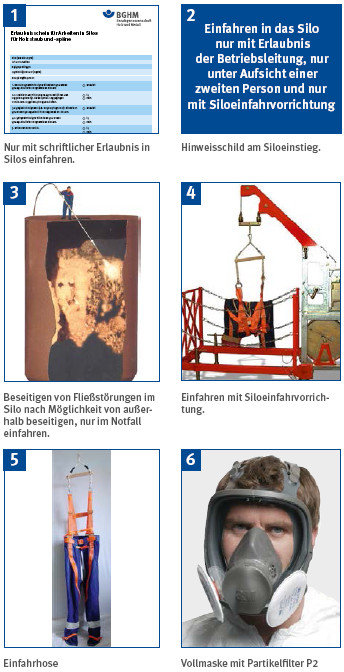

Anhang 4
Betriebsanweisung "Sicheres Arbeiten in Silos für Holzstaub und -späne"

Bilder: 1, 2 und 6: BGHM
3: Fa. Standard Industrie GmbH
4: Fa. Benzenberg & Zemke GmbH
5: interlink GmbH
6: 3M Deutschland GmbH
Vorbereitung
- Weitere Zufuhr von Spänegut in das Silo durch Abschalten der Beschickungseinrichtung (z. B. Transportventilator, Zellenradschleuse, Förderschnecke) verhindern.
- Abreinigen der auf/im Silo befindlichen Filteranlage durch Betätigen des Haupt-Schalters für die gesamte Absauganlage verhindern. (Bemerkung: Da die Abreinigung der Filteranlage nach dem Stillsetzen des Ventilators automatisch anläuft, genügt das Abschalten des Ventilators alleine nicht!). Anschließend gegen unbefugtes Wiedereinschalten sichern!
- Abschalten und Entlüften vorhandener Auflockerungseinrichtungen (z. B. Druckluftkanonen).
- Abschalten des Antriebes der Austrageinrichtung (z. B. Austragschnecke, Schubboden) und Sichern gegen Wiedereinschalten.
- Abklären des Füllstandes und der Verteilung der Späne innerhalb des Silos (z. B. Füllstandsanzeige, Einführen einer Videokamera, Öffnen von Revisionstüren).
Arbeiten in Silos
- Tätigkeiten im Inneren von Silos nur mit schriftlicher Erlaubnis der Betriebsleitung durchführen (Erlaubnisschein). Die im Erlaubnisschein aufgeführten speziellen Schutzmaßnahmen unbedingt einhalten.
- Außer den im Erlaubnisschein benannten Personen dürfen keine weiteren Personen zu den Arbeiten im Inneren des Silos herangezogen werden. Nur mit schriftlicher Erlaubnis in das Silo einfahren.
- Tätigkeiten im Inneren des Silos nur unter ständiger Aufsicht einer zweiten Person (Sicherungsposten) durchführen. Nie eigenmächtig und alleine in Silos einfahren.
- In nicht vollständig entleerte Silos nur von oben her und nur bis zur Oberkante des Füllgutes einfahren.
- Zum Einfahren in das Silo immer Siloeinfahreinrichtung mit Siloeinfahrhose verwenden. Einsteigen ohne diese Einrichtungen ist nicht zulässig!
- Die Bedienperson der Siloeinfahreinrichtung darf während der Arbeiten im Silo die Einfahreinrichtung nicht verlassen.
- Die eingefahrene Person muss solange mit dem Personenaufnahmemittel (Siloeinfahrhose) und der Einfahreinrichtung verbunden bleiben, bis sie wieder ausgefahren ist.
- Nur für Zone 22 zugelassene ortsveränderliche elektrische Betriebsmittel (z. B. Handleuchte) in Schutzart IP 54 oder höher verwenden.
- Beim Einfahren in nicht entleerte Silos Atemschutz (Vollmaske mit Partikelfilter P2 oder fremdbelüftete Vollmasken) tragen. Nach Beendigung der Arbeiten alle Zugänge und Öffnungen wieder schließen.
Beseitigen von Stauungen
- Stauungen im Füllgut (z. B. Späne-Brücken) nur von oben oder von den dafür vorgesehene Podesten bzw. Öffnungen beseitigen.
Nie unterhalb von gestautem Füllgut aufhalten!
- Zum Beseitigen folgende Hilfsmittel einsetzen (z. B. Druckluftlanzen, Druckluftbohrer, Stocher- Stangen, etc.):
Arbeiten an mechanischen Austrageinrichtungen
Beim Öffnen von Zugängen bzw. Klappen muss die mechanische Austragseinrichtung zwangsläufig abgeschaltet werden, z. B. über einen Verriegelungsschalter an der Zugangstür. Achtung: Bei geöffneter Zugangstür darf die Austrageinrichtung über die Brennstoffanforderung der Heizung nicht eingeschaltet werden können.
Verhalten bei Bränden im Silo
Sofort Betriebsleitung bzw. Feuerwehr verständigen. Ventil für die Wasserzufuhr in die Sprühwasser- Löscheinrichtung öffnen bzw. Schlauchverbindung zur trockenen Löschleitung herstellen. Türen und Klappen im Brandfall nicht öffnen, weil durch Luftzutritt und Aufwirbelungen zusätzliche Explosionsgefahr besteht.